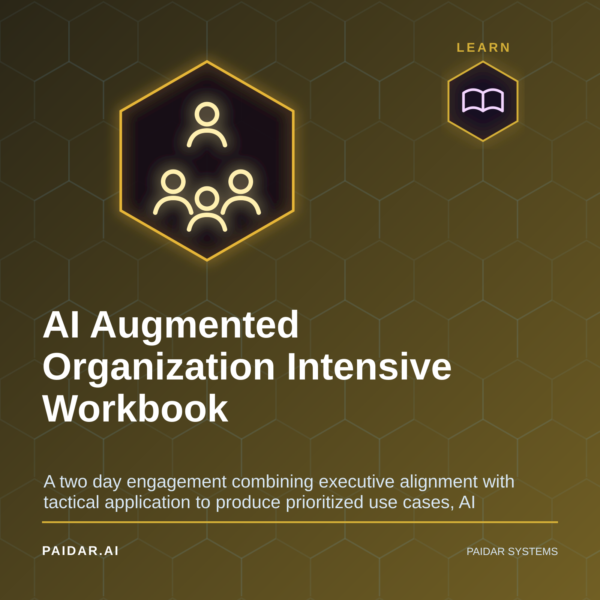

Learn
Understand and perform the AAOS method manually.
Open LearnA two-day engagement combining executive alignment with tactical application to produce prioritized use cases, AI-Augmented workflows, governance requirements, pilot candidates, measures, and a 30/60/90-day action plan.
Guides a team through the six AAOS stages for one representative work pattern and produces a reviewed capability brief, Integrity Packet, operating pattern, measures, and next action.
Teams can produce useful AI-assisted results without a repeatable operating pattern, clear controls, observable evidence, or accountable ownership.

Understand and perform the AAOS method manually.
Open LearnUse reusable implementation materials to create a practical result.
Open ApplyUse governed AI assistance while preserving evidence, uncertainty, validation, and human authority.
Open Augment